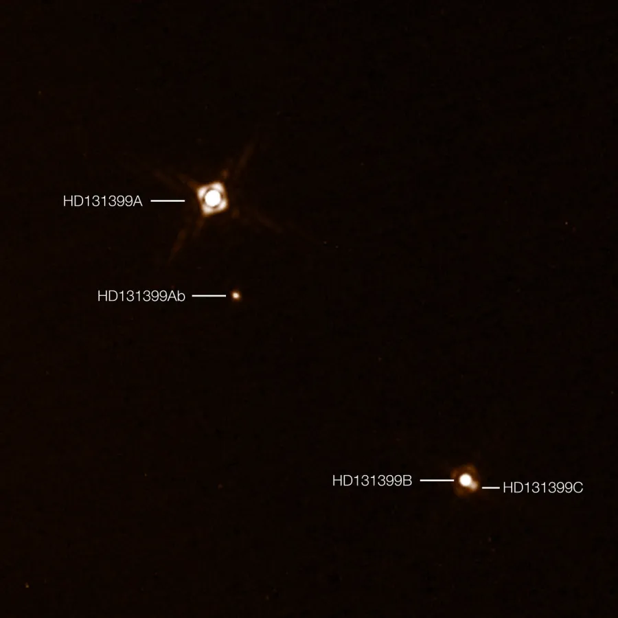

7. Juli 2016
Vermeintlicher Planet HD 131399 Ab entpuppt sich als Hintergrundstern
2016 meldete ein Team mit dem Instrument SPHERE am Very Large Telescope der ESO einen direkt abgebildeten Planeten im Dreifachsternsystem HD 131399, etwa 320 Lichtjahre entfernt. Das Kompositbild zeigt die drei Sterne und den Lichtpunkt, der als Planet HD 131399 Ab mit rund vier Jupitermassen gedeutet wurde.
Die ESO hat die Meldung im April 2022 ergänzt: Beobachtungen der folgenden Jahre haben gezeigt, dass das Objekt kein Planet ist, sondern ein Hintergrundstern.
Quellen: ESO: "A Surprising Planet with Three Suns" (eso1624)., 07.07.2016; ESO: "SPHERE observations of the planet HD 131399Ab" (image eso1624d, with the edit note of 19 April 2022)., 07.07.2016